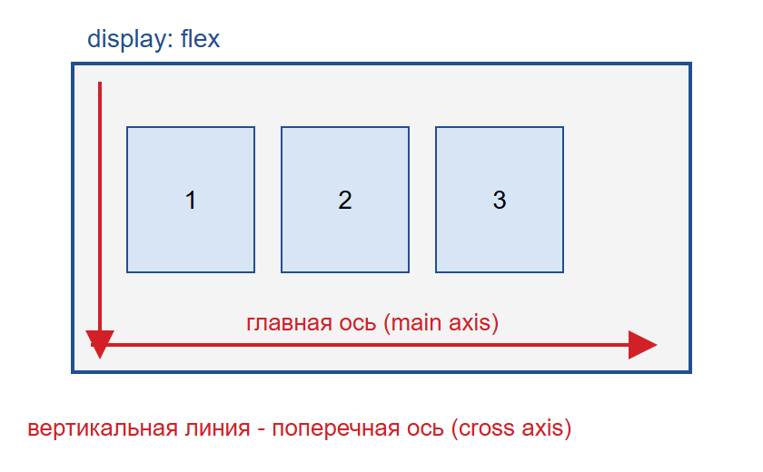
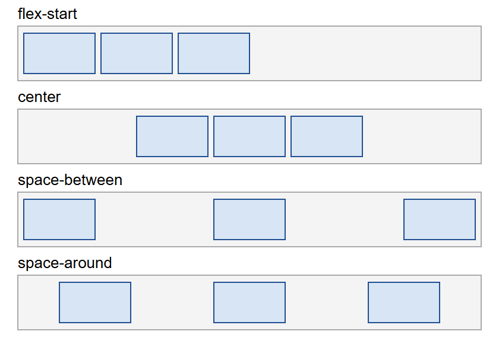
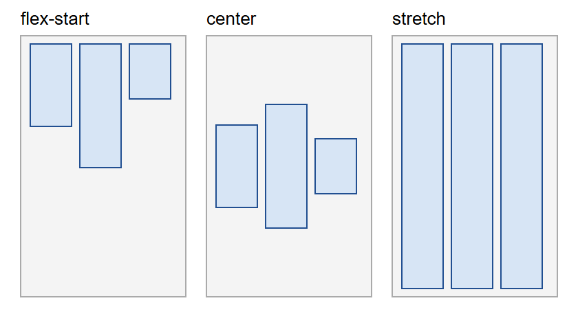
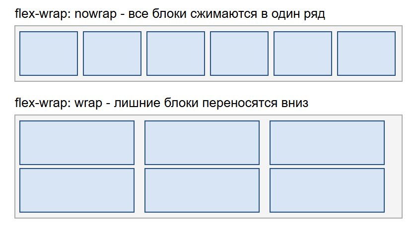

Основы Flexbox
Flexbox - это способ расставлять элементы внутри контейнера. Раньше для этого использовали таблицы и float, и даже простое центрирование могло оказаться проблемой. С Flexbox многие такие задачи решаются двумя-тремя строчками. Все это используется в лабораторной работе с роликом и в верстке этого сайта.
Контейнер и оси

Чтобы все заработало, родителю нужно поставить display: flex. Его прямые потомки сразу становятся в ряд и называются flex-элементами.
В контейнере есть две оси. Главная ось идет слева направо, вдоль нее выстраиваются блоки. Поперечная ось идет сверху вниз. Если поставить flex-direction: column, то оси поменяются местами, и блоки встанут в столбик. Именно поэтому важно не путать свойства: одно работает вдоль главной оси, другое вдоль поперечной.
justify-content

Это свойство расставляет блоки вдоль главной оси. Основные значения:
flex-start- все блоки в начале, это значение по умолчанию;center- по центру;space-between- крайние блоки у краев, остальное место делится между блоками;space-around- свободное место есть и вокруг каждого блока.
В подвале этого сайта стоит space-between, поэтому две надписи разъехались в разные стороны.
align-items

Это свойство выравнивает блоки по поперечной оси. По умолчанию стоит stretch, поэтому все блоки в ряду растягиваются на одну высоту. Значение flex-start прижимает их к верху, а center ставит посередине.
Самый известный пример - центрирование блока сразу по двум направлениям:
.parent {
display: flex;
justify-content: center;
align-items: center;
}Перенос на новую строку

По умолчанию блоки стоят в один ряд и сжимаются, если им не хватает места. С flex-wrap: wrap лишние блоки переходят на следующую строку. Расстояние между ними удобно задавать свойством gap.
Свойство flex
У самих элементов есть сокращенное свойство flex, в котором указываются три значения: можно ли блоку растягиваться, можно ли сжиматься и какой у него начальный размер. Например, карточки на главной странице сделаны так:
.cards {
display: flex;
flex-wrap: wrap;
gap: 14px;
}
.card {
flex: 1 1 240px;
}Каждая карточка начинается с ширины 240 пикселей и делит оставшееся место поровну с соседями. На широком экране они стоят в ряд, а на узком сами переносятся вниз. Медиа-запросы для этого не нужны.